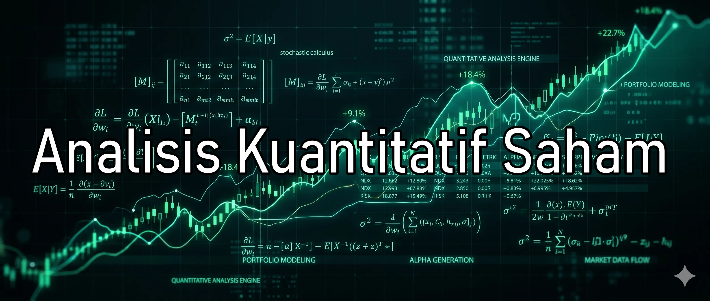

Kami menyediakan instrumen pengolah data statistik multidimensi yang objektif. Bukan grup tebak-tebakan arah, bukan penasihat investasi, dan sama sekali tidak memberikan sinyal jual-beli. Instrumen ini hadir murni sebagai asisten riset otomatis untuk menghemat WAKTU berharga Anda—memangkas proses screening bursa yang melelahkan selama berjam-jam menjadi ringkasan data siap pakai dalam hitungan menit.
Masa uji coba gratis publik saat ini sedang aktif! Klaim sekarang untuk mengunci hak akses VIP PREMIUM penuh selama 14 Hari secara murni gratis (Rp 0).
Masa promo gratis publik telah selesai. Buka akses data komputasi premium End-of-Day untuk Anda selama 14 Hari penuh hanya seharga Rp 29.900.
Tanpa syarat • Bebas batalkan kapan saja

Solusi efisiensi pengolahan data terstruktur untuk mendukung kerangka berpikir mandiri Anda:
Anda tidak perlu lagi membuang waktu berharga setiap malam untuk menyisir ratusan grafik saham di bursa secara manual. Mesin otomatis kami mengeksekusi komputasi data End-of-Day secara instan untuk menyajikan dokumen ringkasan yang siap dibaca dalam hitungan menit.
Hindari jebakan rumor pasar atau FOMO akibat opini media sosial. Seluruh data dihitung secara matematis menggunakan indikator baku seperti Z-Score dan VWAP Deviation guna melihat posisi harga secara statistik murni.
Filter algoritma Volume Spread Analysis (VSA) membantu mengidentifikasi indikasi awal Stealth Accumulation, kondisi Test Supply, atau kriteria jenuh tren dari volume transaksi harian.
Kalkulasi otomatis batas Support Historis dan rasio Maximum Drawdown (MDD 52W) untuk mengukur tingkat kerawanan aset secara objektif sebelum mengambil tindakan mandiri.
Format PDF resolusi tinggi yang dikirim otomatis ke perangkat Anda setiap sore.
Jawaban ringkas sebelum Anda memulai eksplorasi data kuantitatif Anda.
Tidak. Kami adalah platform pengolah data komputasi murni. Laporan kami berfungsi sebagai screener statistik tingkat lanjut untuk memangkas waktu riset Anda. Keputusan akhir untuk transaksi mutlak berada di tangan Anda (DYOR).
Laporan berformat PDF resolusi tinggi dikirimkan secara otomatis ke dalam Channel Telegram VIP setiap hari bursa aktif dan setelah market ditutup (data End-of-Day).
Tidak perlu daftar sama sekali. Cukup klik tombol klaim di halaman ini yang akan mengarahkan Anda ke bot Telegram kami. Anda akan otomatis mendapat akses VIP penuh selama 14 hari. Jika merasa cocok setelah trial, Anda bisa berlangganan (mulai dari Rp 99.000). Jika tidak, abaikan saja.
Paket Starter dirancang khusus agar Anda dapat menguji keandalan data komputasi kami selama 14 hari penuh dengan komitmen biaya minimal harian (hanya Rp 29.900 sekali bayar). Setelah masa aktif habis, Anda bebas memutuskan untuk upgrade ke paket VIP penuh bulanan atau membiarkannya nonaktif tanpa denda apa pun.
Semua fitur premium terbuka 100% untuk mendampingi analisis mandiri Anda.
Update komprehensif saham Kompas100 pilihan yang dikirim otomatis via bot setelah market tutup.
Bagikan link undangan kemitraan dan kumpulkan saldo komisi tunai berulang langsung ke dompet bot Anda.
Tidak ada fitur matematika yang disembunyikan. Anda mendapat visualisasi menyeluruh atas kalkulasi Z-Score dan VSA.
Jika infrastruktur komputasi ini terbukti menghemat waktu Anda, biaya berlangganan flat hanya **Rp 99.000/bulan**.
Untuk menghindari kesalahpahaman terkait layanan kami, harap perhatikan batasan operasional berikut secara saksama sebelum Anda mengklaim akses VIP:
Laporan kami objektif dan transparan. Akses laporan VIP kami sekarang dan rasakan sendiri bedanya tanpa biaya.
Klaim Akses Gratis 14 Hari via TelegramPangkas waktu screening bursa sekarang juga. Uji keandalan algoritma riset murni kami melalui Paket Starter 14 Hari hanya seharga Rp 29.900.
Aktifkan Starter Pack via Telegram